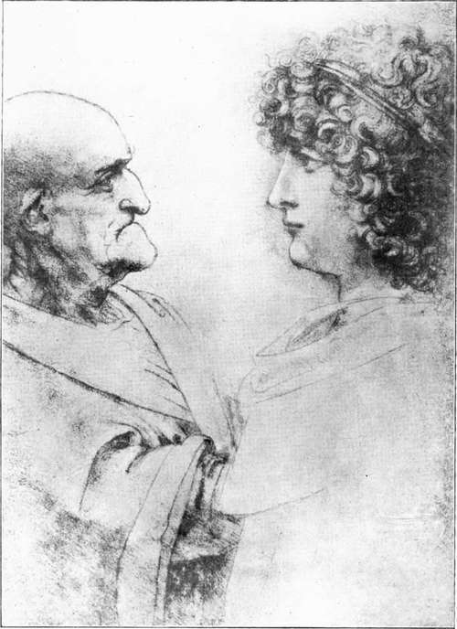

The Pictures. Part 14
Description
This section is from the book "Leonardo Da Vinci", by Edward McCurdy. Also available from Amazon: Leonardo Da Vinci.
The Pictures. Part 14
I am disposed to believe from internal evidence that the Academy Cartoon represents the earlier form of the composition, and if this be so, whether produced in Milan or Florence, it must have been in existence previous to April, 1501.
Vasari's testimony is that on Leonardo's return to Florence, Filippino Lippi resigned in his favour a commission to paint an altar-piece for the Servite monks, and that after considerable delay he prepared a cartoon with the Madonna, S. Anne and the infant Christ so admirable that it was the sensation of Florence. He describes the cartoon in detail. The description of the Virgin, as " filled with joy and gladness as she contemplates the beauty of her son, whom she is tenderly supporting in her lap," can only refer to the composition of the Academy Cartoon.
With equal definiteness the sentence which follows, " Our Lady, with eyes modestly bent down, is looking at a little S. John who is playing with a lamb," refers to a composition similar to the Louvre picture, although the Child is here called S. John instead of Christ.
Vasari had not seen the cartoon which he states had gone to France. He seems to have placed together two different descriptions of different cartoons, either not realizing the discrepancy, or else, as he thought, reconciling it, by substituting S. John for Christ in the second description, and so avoiding describing Christ as both seated in the lap of the Virgin and as playing with the lamb.
In treating of Leonardo's life in France, Vasari says the King wished him to carry out in colour the cartoon of S. Anne, but he kept him for long waiting with nothing but words. However, the Cardinal of Aragon, on visiting the painter at Amboise in October, 1517, was shown three pictures, " tutti perfettissimi," one of these being " the Madonna and Child who are seated in the lap of S. Anne," and Paolo Giovio mentions a picture by Leonardo of the infant Christ playing with the Virgin and S. Anne, which had been acquired by Francis I. If this be the Louvre picture it subsequently passed out of the Royal Collection, for the S. Anne in the Louvre was acquired by Richelieu in Italy and brought to France in 1629, and from that time its history is unbroken.
As for the cartoons, Billi and the " Anonimo Fiorentino " cite among the " disegni maravigliosi" one of the Madonna and S. Anne which went to France, and Lo-mazzo says the same of a cartoon of S. Anne, adding that it was then (in 1585) in Milan in the possession of Aurelio Luini, but it is impossible to say which composition is referred to.
Probably Leonardo had the Academy Cartoon with him when he returned to Milan in the service of Louis XII. It was at Milan presumably that Luini made the copy in colour, with the addition of S. Joseph, which is now in the Ambrosiana.
The figure of the Virgin is also exactly repeated in a Pomona and Vertumnus at Berlin, ascribed to Francesco Melzi, who, however, from his close association with Leonardo, might have had access to the cartoon either in Milan or at Amboise.
Mr. Marks, who has gathered together all that is known of the cartoons, has shown that in all probability the Academy Cartoon is that referred to by the Padre Resta, at the end of the seventeenth century, as in the possession of the Arconati family at Milan, whither it came from Pompeo Leoni's collection in 1610.
It subsequently passed into the Casnedi Collection, where it was seen together with the cartoons of the Apostles' heads, now at Weimar, by an English traveller in 1721. The collection was purchased by Robert Udny, British Consul at Venice from 1760 to 1766, and the cartoons of the Apostles' heads were sent by him to London and were acquired by Sir Thomas Lawrence. The presumption is a strong one, that he also sent the cartoon of S. Anne, and that it then passed into the possession of the Royal Academy. A Minute of the Council of the Academy, dated March 23rd, 1791, gives directions for its proper preservation.
The Cartoon is an entirely characteristic work of the middle period-that period of the full maturity of his art which opened with the Last Supper and closed with the cartoon of the Battle of Anghiari.
So subtle is the modelling, so delicate the touch, so supreme the mastery of the gradation of tone and halftone, that the work approaches very near to that high category where is the Mona Lisa.
It makes us cognizant, perhaps more fully than any other existing work, of his practice of modelling his figures preparatory to painting them. Cardinal Borromeo referred in 1625 to a clay model of the infant Christ as being still in existence, which he says Leonardo made in preparation for this cartoon.1
So plastic is the result that it would seem as though the whole effect were of statuary, weather-beaten, and crumbling a little in token that time has taken it to itself, has, as it were, sowed lichen in the hollows and in the tiny interstices of the stone, and touched with riper loveliness the softly moulded arm and breast.
There is at Vienna in the possession of Count Ester-hazy a cartoon 'apparently agreeing with the Louvre picture, but its authenticity is very doubtful in the opinion of those critics who have seen it.
There are, however, several authentic studies for parts of the Louvre composition, Two of these-the sheet of studies in red chalk for the infant Christ at Chantilly, and the black chalk study of the head of the Virgin, formerly in the Earl of Warwick's Collection, and now in that of Dr. Mond-suggest by their greater delicacy of treatment, that the Louvre picture, while not indeed entirely finished, is also in part in execution the work of a pupil-this being especially the case as regards the head and arms of the Christ, the modelling of which is distinctly the inferior of the studies of firmer, more responsive touch at Chantilly.
1 Gori, "Symbolae Decas." Secunda VII., 122, 123 (Marks).
Plate 40. Studies Of Heads
Alinari photo - Uffizi Gallery, Florence
Continue to:
Tags
leonardo da vinci, pictures, drawings, galleries, statues, da vinci